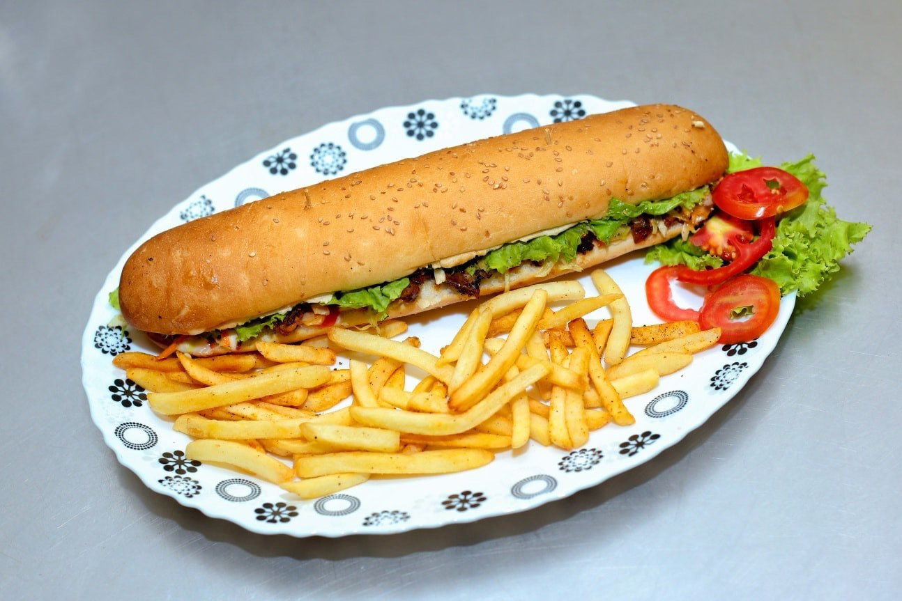

Submarine

Description
Introducing the Chicken Submarine, a delectable recipe that promises to tantalize your taste buds. This culinary masterpiece begins with marinated chicken, tenderly seasoned with a blend of salt, pepper powder, and soy sauce, ensuring each bite bursts with flavor.
In the filling, the magic unfolds as a generous portion of butter mingles with chopped garlic and onions, infusing the dish with rich, savory goodness. Soy sauce, tomato sauce, oyster sauce, and a hint of water create a luscious and aromatic mixture that envelops the chicken.
But that's not all; the secret sauce, a tantalizing combination of mayonnaise, tomato sauce, mustard cream, and a medley of spices, elevates this submarine to new heights. A dash of lime juice (optional) adds a refreshing zing, perfectly complementing the savory symphony.
Chicken Submarine is more than just a dish; it's a culinary adventure waiting to be savored. Embark on this flavorful journey and indulge in the mouthwatering harmony of ingredients that make this recipe a true delight.
Ingredients:
- Chicken Marination
- Chicken - 200G
- Salt - 1/2 Tsp
- Pepper Powder - 1/4 Tsp
- Soy Sauce - 1/2 Tsp
- Filling
- Butter - 3 Tbsp
- Garlic - 6 Cloves Chopped
- Onion - 1 medium size
- Soy Sauce - 1 Tsp
- Tomato Sauce - 6 Tbsp
- Oyster Sauce - 1 Tsp
- Water - 3 Tbsp
- Sauce
- Mayonnaise - 4 Tbsp
- Tomato Sauce - 2 Tbsp
- Mustard Cream - 1/2 Tsp
- Sugar - 1/2 Tsp
- Salt - As per Taste
- Pepper Powder - As Needed
- Garlic Powder - 1/2 Tsp
- Paprika or Chili Powder - 1/2 Tsp
- Lime Juice - Few drops (optional)
Steps:
- Marinate the chicken by mixing it with salt, pepper powder, and soy sauce. Let it sit for 15-20 minutes.
- In a pan, melt butter over medium heat.
- Add chopped garlic and sauté until fragrant.
- Stir in the chopped onion and continue to cook until it becomes translucent.
- Add soy sauce, tomato sauce, oyster sauce, and water to the pan. Mix well and let it simmer.
- Meanwhile, heat a grill or skillet and cook the marinated chicken until it's fully cooked and slightly charred.
- Slice the cooked chicken into thin strips.
- Once the sauce in the pan has thickened, add the sliced chicken to the sauce. Stir to coat the chicken evenly.
- Prepare the sauce by mixing mayonnaise, tomato sauce, mustard cream, sugar, salt, pepper powder, garlic powder, paprika or chili powder, and a few drops of lime juice (optional) in a bowl.
- Warm the submarine rolls or bread of your choice.
- Assemble the sandwiches by placing the chicken and sauce mixture inside the warm rolls.
- Serve your delicious Chicken Submarines hot and enjoy!